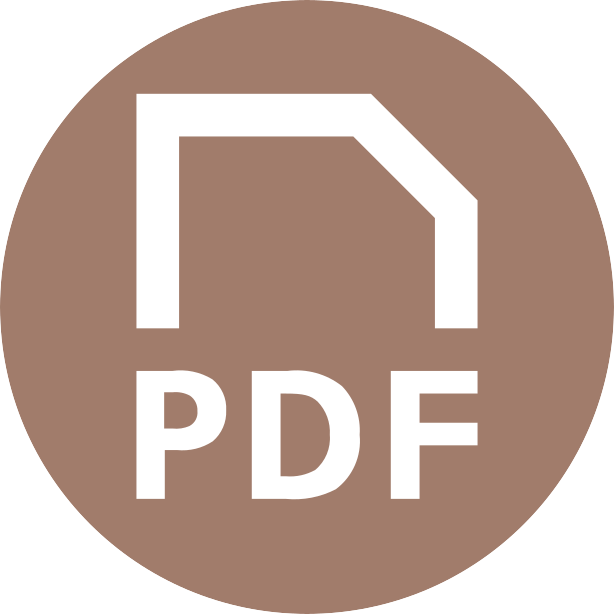

University of Calgary
MSc in Computer Science (June '28)
University of Illinois Chicago
BSc in Computer Science (May '25)
Co-Instructor - Web Security Workshop (SPISE)
July 2026- Co-instructed a summer web security program for high school girls, translating complex cybersecurity topics into accessible, hands-on modules
- Created technical slide decks and live demonstrations covering browser cookies, HTTP tracking, and third-party data collection tools like Meta Pixel
- Facilitated interactive activities measure student comprehension and drive active engagement with digital privacy concepts
Comparative Analysis of CAN bus and Automotive Ethernet | CAN, AE, Traffic Analysis
Work in Progress- Investigating the cybersecurity implications of migrating from traditional CAN bus architectures to high-bandwidth Automotive Ethernet systems
- Employing a hands-on experimental methodology that includes protocol packet sniffing, latency benchmarking, and vulnerability mapping within a controlled vehicle network simulation
- Assessing the trade-offs between CAN’s cost-effective, real-time control features and AE’s full-duplex capabilities under simulated intrusion scenarios
- Currently compiling traffic analysis data to formulate updated security recommendations for autonomous driving and sensor fusion applications
